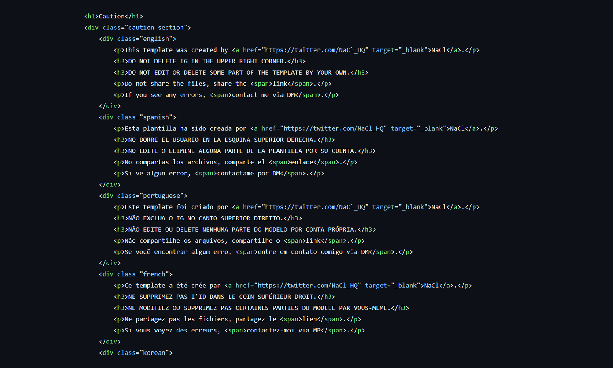

언어별 템플릿 배포 페이지
#DEV
#HTML&CSS
#JS
#DESIGN
개요
한국어로 제작했던 자기소개 디자인 템플릿을 각 언어별 버전을 만들어 배포하는 페이지를 제작하였다. 각 언어별로 섹션을 나누고 언어 클래스를 부여한 뒤 브라우저 언어를 감지해 해당하는 언어의 콘텐츠만 표시되도록 하였다. 또한 사용자의 테마가 라이트 모드인지 다크 모드인지 감지하고 이에 맞게 색상을 변경하도록 지정하였다.
기간:
2024. 04. 29 ~ 2024. 05. 02
사용:
HTML, CSS, JS, VS CODE
메인 기능 1-
브라우저
언어 감지

브라우저 언어 감지
이전 브라우저의 콘텐츠 양 및 구조 문제로 인해 시도하지 못 했던 언어 감지 기능을 시도해 보았다.
코드
언어별로 영역을 지정하고 해당 언어의 클래스를 부여한 뒤 내용을 작성하고, 모든 언어 클래스에 기본적으로 display: none 속성을 부여했다.
브라우저의 내비게이션 언어 코드를 감지해 가져온 뒤 if-else if문을 돌려 일치하는 콘텐츠의 클래스가 보이도록 구성하였다. if문은 사용자가 적을 것으로 예상되는 언어 순으로 기재하고, 해당하는 언어가 없을 경우 영어가 나오도록 영어를 마지막 else에 작성하였다.
메인 기능 2-
테마
테마
미디어쿼리를 활용해 사용자의 테마를 감지하고 이에 따라 각 색상 변수에 저장된 값을 다르게 하였다.
코드
미디어쿼리가 사용자 테마를 감지하면 그 안에 html 전체에 적용되는 색상 변수를 작성하였다. 그리고 기본 CSS에는 해당 변수를 불러와서 사용하도록 한다. 전체 CSS 내용을 변경하지 않고 불러올 색상 코드만 변경해도 바로 적용할 수 있어 유지보수에 용이하도록 하는 방법이다.